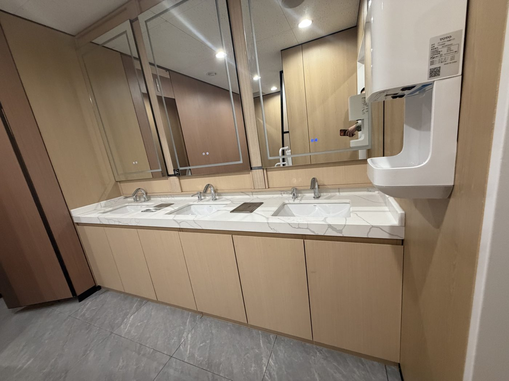
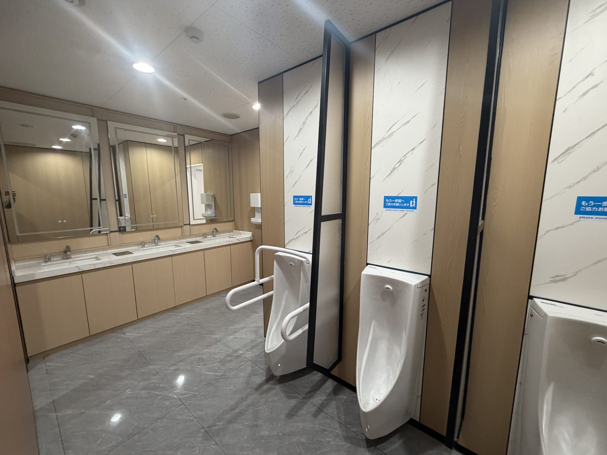
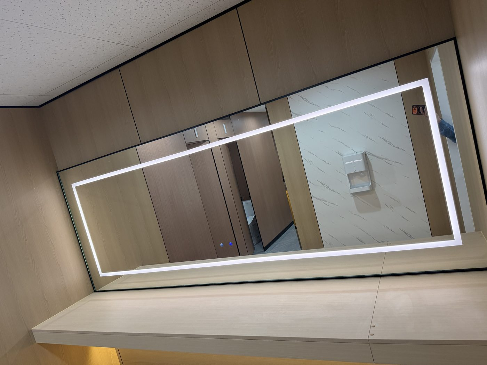
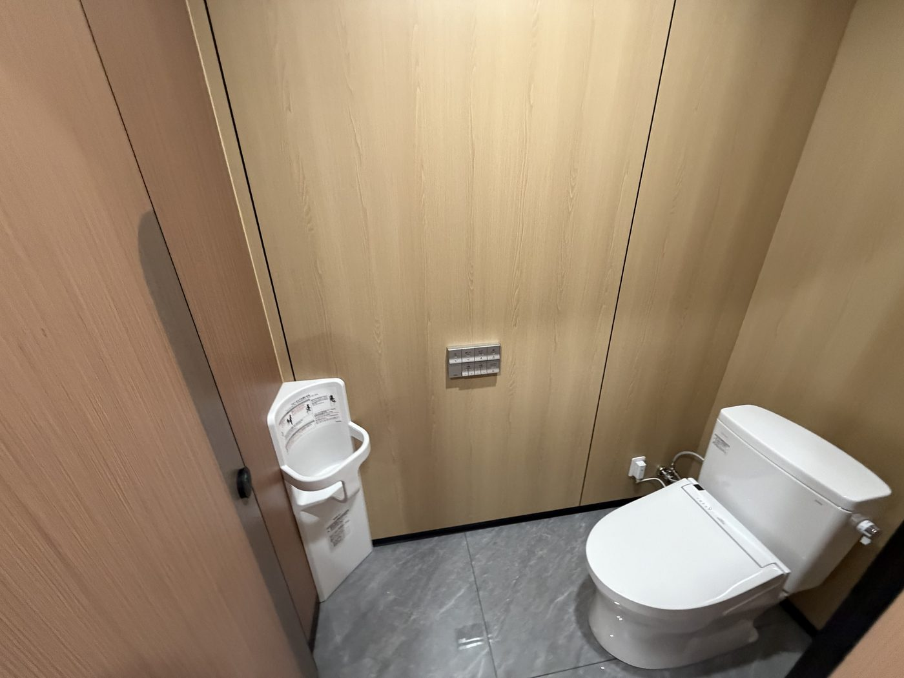
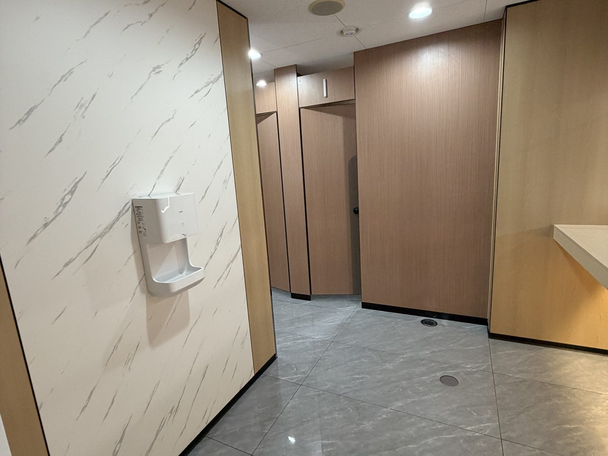
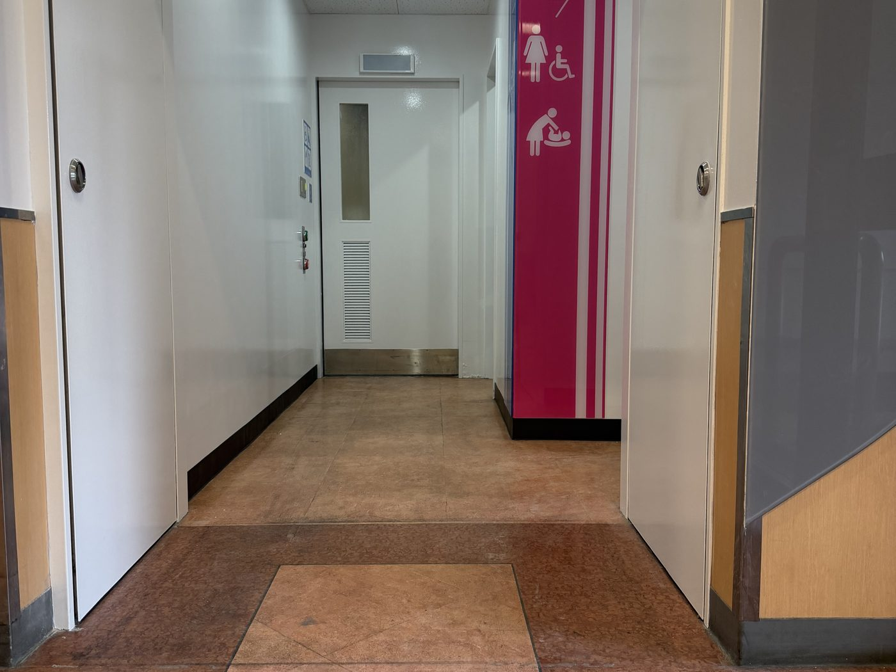

日本的公共卫生间改修，难点不在好看，在于耐用、好清洁、符合无障碍要求，以及在营业中的设施里把工期切开做。
木纹面板 × 大理石纹瓷砖 × 嵌灯与 LED 镜。公共设施在日本同样要求"看得过去"，不是只要能用。






不是只做设计或只做管理——从拆到收尾，工序和职人都在我们手上。
既存拆除、墨出し、軽量鉄骨下地组立、天井下地。营业设施内的分段施工与养生。
给排水配管改修、排水立管周边处理、电气配线与配电盘、嵌灯与感应器电源。
墙面板材、瓷砖、防水、隔断安装、天井仕上、收边与打胶。
洁具（TOTO 等）安装调试、扶手与育婴椅等无障碍配件、标识安装、清扫交付。
因为"能在日本卖"这件事，最后是在这种现场被验证的——不是在会议室里。
※ 本页照片为桜華国際承接工程的竣工记录。出于客户方要求，设施名称、发包方、金额与工期不予公开。需要更详细的施工资料或参观现场，请单独联系。
微信 / 电话 / 邮件都行，中文直接说。